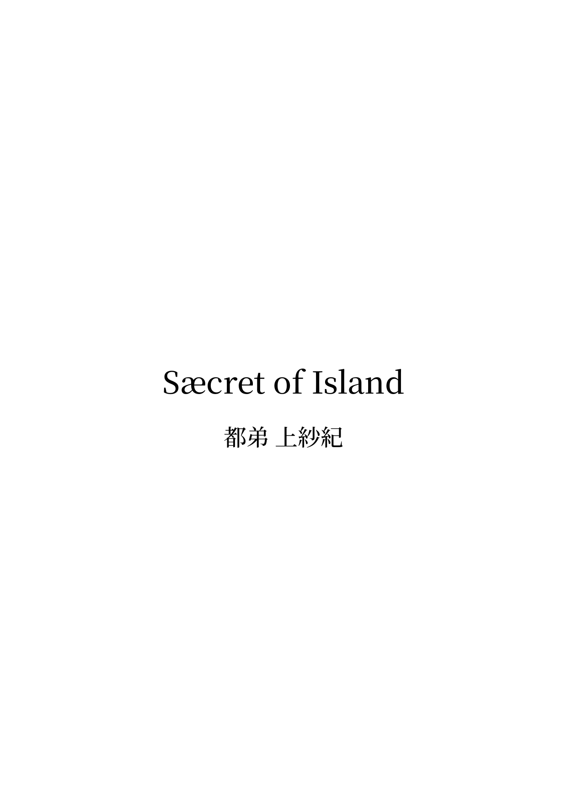

Uwasaki TSUDE's
Official Website
Back to Home
Sæcret of Island
Entity

Click to download page
Data
Title
Sæcret of Island
Date
2025/08/15
Type
Document
Comment
「物事には原理がある――それを見つける努力が必要であり、それを伝える努力が必要である」
Link
X
Back to Home